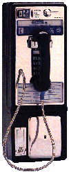

back
to Paul's Poetry Page
back
to Paul's Poetry Page|
south central bell a pay phone on the corner rings unanswered. it isn't mine. I can't see the ocean but I can taste the salt in the air. hurrying past me terms of endearment are uttered with the sincerity of a sneeze. no one asks me what I'm writing or why but they all eye me with suspicion. and with good reason, of course. I say I'm nearly through waiting but it obviously hasn't been long enough. not even a whisper of reprieve. more pedestrian traffic weighs in chatting cheerfully until they see me. why am I here? the foundation of metaphysics. how long will I stay? foundation and too much blush. laughter spills out onto the sidewalk with no one to clean up after it. shops are closing right and left and yet no one wants to know what I'm waiting for. maybe that's not true. maybe they all want to know. maybe they all know already. the flags are taken down. the lights are turned off. finally my hands are turning blue. there are more reasons to leave than to stay even though I only needed one. the last pedestrian was downright frightened. am I so indistinguishable from the shadows? maybe I'll wait until I've filled the page although I've already said far too much about nothing at all. I have a fantasy in which I walk away and finally hear the phone ring only to continue walking never turning back. what will happen instead of course is that I'll stay here until I freeze solid and the phone will never ring. every few steps I will look over my shoulder at the silent phone. every few steps I will hear it ringing somewhere else. Paul David Mena 22 March, 1996 Hermosa Beach, CA |
 |
back
to Paul's Poetry Page